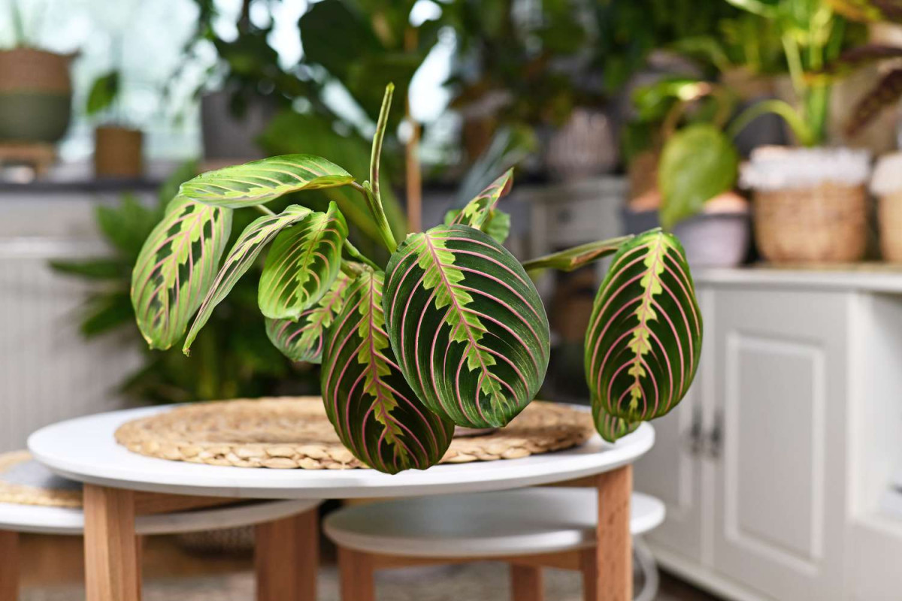
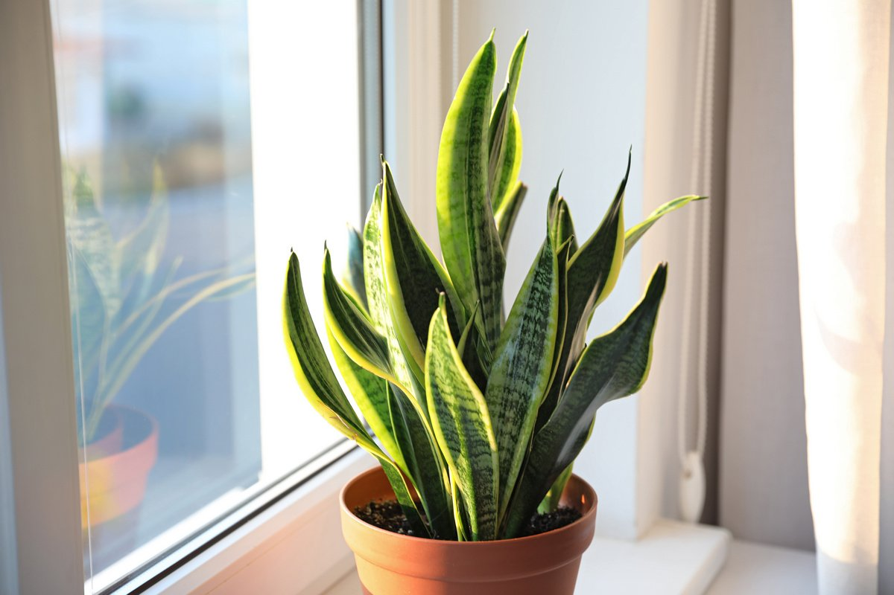
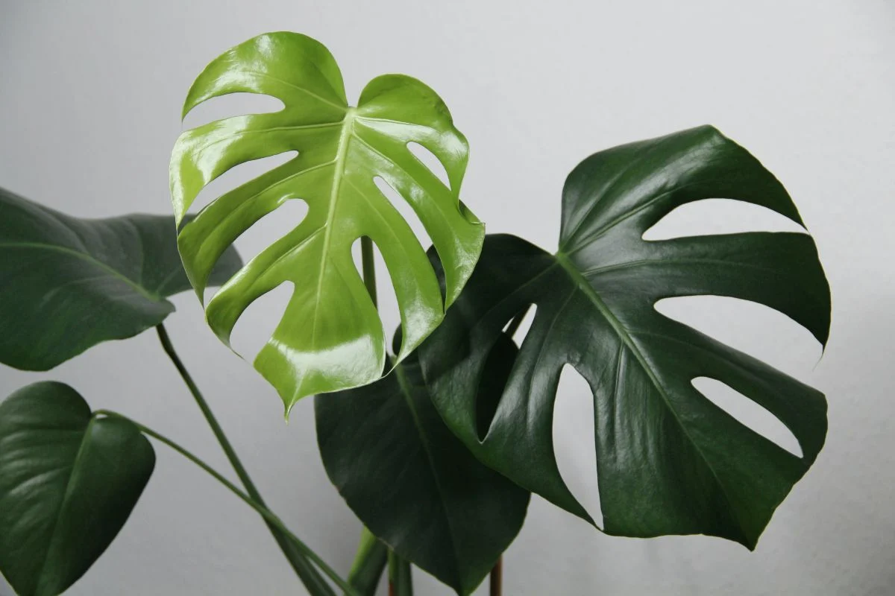

Нецветущие
Маранта
Маранте нужно много света, но без попадания на нее прямых лучей полуденного солнца. Поэтому лучшие места для горшков с ней – восточные и западные окна. Впрочем, маранта может жить и с искусственным освещением, при условии, что световой день длится около 16 часов. Летом ей комфортно при +23-+25℃. С середины осени, зимой и весной ей подходит более низкая температура – +18-+20℃. Не должна опускаться ниже +18℃ и температура почвы в горшке. Растение сможет выдержать разовое и кратковременное снижение до +10℃, но резкие температурные перепади и сквозняки ей вредны. Маранте нужен влажный воздух. Нужно опрыскивать ежедневно, а если воздух очень сухой, то – дважды в день. Увеличению влажности поможет еще один способ. Нужно поддон заполнить керамзитом, и верху поставить горшок с растением. При поливе лишняя вода соберется в поддоне, и ее сразу впитает керамзит. Это очень нежный подход – корни вытягивают влагу, но не загнивают. В этом случае тоже надо проследить, чтобы вода не доставала до дна горшка. Поливать летом обильно, в зимний период – умеренно. Но всегда ориентируйте на просыхание верхнего слоя горшечного грунта. Постарайтесь, чтобы вода для полива была чуть теплее комнатной температуры, кроме того мягкой и отстоявшейся как минимум 12 часов. Удобрять маранту надо регулярно – дважды в месяц, поочередно органическими и минеральными удобрениями. Однако дозировку делайте в 2 – 3 раза меньше, чем указано на упаковке. Пересадку проводят 1 раз в 2 года в первые весенние недели. Емкость для посадки берут низкую и лучше, если она будет пластмассовой, при этом по величине она должна быть немного больше старой. На дне делают дренажный слой из крупнозернистого песка и битого кирпича (керамзита). Субстрат нужен слабокислый. В его состав может входить торф, песок и садовая почва (3:2:6) либо торфяная, перегнойная и листовая почва (1:1:1). В готовую почвосмесь рекомендуется всыпать небольшое количество древесного угля и хвойной почвы. Прежде чем приступить к пересадке, с куста нужно срезать всю засохшую и вялую листву, в этом случае молоденькие побеги будут развиваться более активно.

Сансевиерия
Пестролистым сортам для поддержания декоративности требуется яркий, но рассеянный солнечный свет. В темноте окраска листьев тускнеет. Оптимальное месторасположение — окна, выходящие на юго-запад и юго-восток. Сансевьера с однотонными листьями отлично растет в полутени. Ее можно разместить на северном окне или в глубине комнаты. Но при выращивании в отдалении от света цветок следует хотя бы пару раз в год на месяц–полтора выставлять на освещенное место, чтобы смогли сформироваться молодые листья. В противном случае рост растения может остановиться. Сансевиера отлично себя чувствует в широком температурном диапазоне — от 15 до 30 градусов тепла. Также она без проблем способна перенести краткосрочное понижение температуры до +5 градусов. В то же время растение не любит частых резких температурных перепадов. Чтобы весной он порадовал цветением, важно обеспечить период зимнего покоя. Для этого растение на месяц помещают в прохладное место, сильно ограничив полив. Не стоит оставлять его на холоде надолго, что провоцирует развитие корневых гнилей. Оптимальная влажность — 40–50%, но растение может отлично расти и в сухом воздухе. Поэтому оно не нуждается в опрыскивании. Напротив, при частых опрыскиваниях возможно загнивание листьев. Тропический гость предпочитает рыхлый легкий грунт с нейтральной реакцией. Обязателен толстый дренажный слой. Можно купить специальный субстрат для сансевиерии или суккулентов. Несложно приготовить его и самостоятельно, соединив в равных пропорциях дерновую и листовую почву с добавлением 2 частей речного песка. Можно смешать дерновую землю, песок, торф и перегной в соотношении 3:1:1:0,5. Не стоит злоупотреблять торфом, так как он впитывает и удерживает влагу, что может спровоцировать загнивание корней. Для сансевьеры следует подбирать невысокий горшок с большим диаметром, так как корневища разрастаются вширь. Оптимальный материал — глина и керамика. Пластик плохо подходит для растения, так как при активном росте корневищ он может лопнуть. К тому же под весом массивных листьев пластиковый горшок легко переворачивается. Количество поливов зависят от времени года, влажности и температуры воздуха, интенсивности освещения. Зимой «тещин язык» поливают ежемесячно, летом в солнечную погоду — еженедельно, а в пасмурную — раз в 10 дней. При этом нужно ориентироваться на состояние почвы и производить полив только после просыхания земляного кома. В противном случае существует высокий риск развития корневых гнилей. Важно не допускать скапливания воды в центре розетки, чтобы избежать загнивания листьев. Сансевиерия может обходиться без подкормок. Но чтобы активировать рост и развитие, рекомендуется во время вегетации периодически вносить удобрения для кактусов и суккулентов. Подойдут и подкормки, предназначенные для декоративно-лиственных растений. Указанную в инструкции дозировку следует уменьшить вдвое. Весной и осенью подкармливают сансевиерию ежемесячно, летом — 2 раза в месяц. Зимой вносить удобрения не нужно. При подкормке пестролистных сортов не стоит использовать азотные удобрения. Они могут привести к увеличению количества хлорофилла. В результате листы утрачивают пеструю расцветку и становятся зелеными.
Монстера
Монстере нужно яркое освещение, но прямое солнце ей не подойдет. Оптимально расположить растение на восточной или западной стороне рядом с окном. На южной стороне Монстеру можно расположить на удалении от окна. В тени, при недостатке освещения, растение потеряет свою привлекательность: листья станут более мелкими, без разрезов. Световой день для растения нужен в течение 12 часов, поэтому вам понадобится дополнительная подсветка. Монстера не любит перестановки. О ее постоянном «месте жительства» нужно подумать заранее. Нужно учитывать, что она разрастается, поэтому подоконник не лучшее место: в скором времени листья закроют часть окна. Цветоводы рекомендуют располагать горшок на подставке на расстоянии 1-1,5 метров от окна, и организовать подсветку, которую включают по мере необходимости. Со временем Монстере потребуется опора, которая заменит ей ствол дерева, иначе она прогнется под тяжестью листьев и воздушных корней и сломается. Если стебель начал отклоняться от вертикали, то растению нужно помочь. Обычно это наступает, когда Монстера вырастает в высоту на полметра. Не стоит размещать горшок с лианой в спальной комнате. Ночью она будет поглощать кислород. Для нормального роста и развития растению нужно тепло. Оптимальная температура летом 22-25 градусов, зимой 18-20 градусов. При понижении температуры растение замедляет свой рост. Монстеру нужно оберегать от сквозняков и не допускать резкого изменения температуры. Растению нужна повышенная влажность воздуха (от 65%). Монстеру нужно в теплое время регулярно опрыскивать, причем не только листья, но и воздушные корни. При понижении уровня влажности до 60% и ниже, опрыскивать нужно чаще. С крупных листьев Монстеры нужно систематически удалять пыль, которая замедляет фотосинтез, нарушает газообмен растения, скрывает следы вредителей. Полив Монстеры Весной и летом Монстера нуждается в обильном поливе, но только после просушки верхнего слоя субстрата. Зимой поливают, когда почва просохла не менее, чем на четверть. Переувлажнение, как и пересушка почвы негативно отражаются на здоровье растения. Воду в поддоне оставлять нельзя. Для полива используют отстоявшуюся воду, слегка теплую. Субстрат для выращивания Монстеры нужен питательный, рыхлый, воздухопроницаемый, хорошо удерживающий влагу, рH - нейтральный. Подойдут готовые субстраты для декоративно-лиственных растений или для Пальм. Желательно добавлять к ним горсть перлита. Самостоятельно почвосмесь можно приготовить, смешав в равных долях дерновую землю, торф, перегной и песок. Перед использованием пролить раствором марганцовки в слабой концентрации. В подкормках весной и летом нуждаются взрослые экземпляры. Подойдут комплексные минеральные составы для декоративно-лиственных растений, но дозировку нужно снизить в 2 раза. Удобрения вносят раз в 14-20 дней. Летом один раз можно подкормить органикой (настой коровяка).